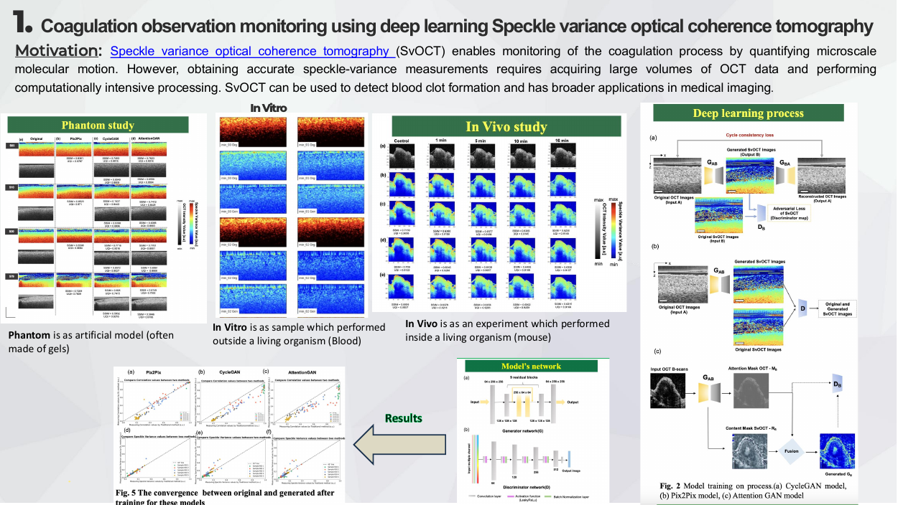
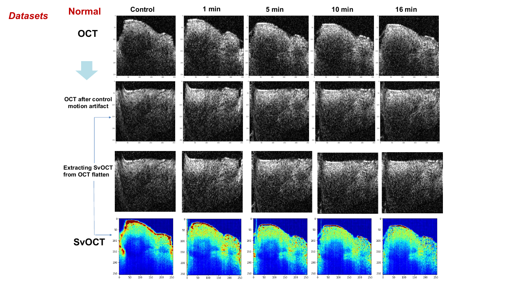

Research project
Coagulation Monitoring with Speckle-Variance OCT
Research in speckle-variance optical coherence tomography (SvOCT) for coagulation monitoring.
Research motivation
Large OCT volumes and computationally intensive processing motivate the investigation of learning-based methods.
Approach & scope
The research portfolio describes phantom, in-vitro and in-vivo experiments, alongside image-processing and deep learning approaches to quantitative speckle-variance analysis.


This page summarizes documented research experience or a developing project. Numerical performance claims, publication details and dataset access are not provided without verification.
Source: Research Experience – Van Nguyen (supplied portfolio). Images reproduced from the original portfolio.